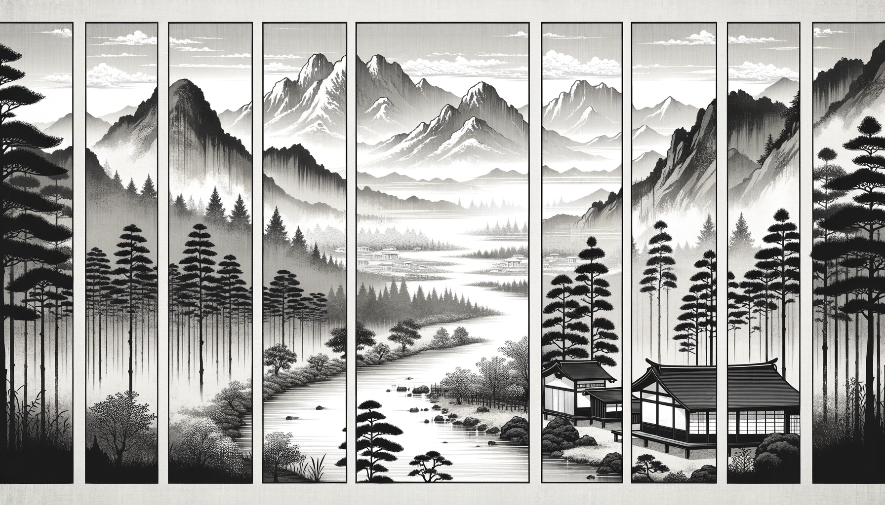

七十五巻 巻一覧
正法眼藏第37 春秋
本ページは tools/gen_web_volumes.py が doc/正法眼蔵.txt から冒頭を抜粋して生成しています。図・詳細解説は今後の手編集で拡張できます。
出典（原文）: https://shomonji.or.jp/zazen/doc/genzou.html
（ローカル生成の全文: 全文ページ）
この巻の位置づけ（学習メモ）
道元『正法眼蔵』七十五巻の第37篇「春秋」です。禅籍・経典への引用や語の行間が重なりやすいので、一度ですべてを要約に還元しない読み方を推奨します。問答 Bot では巻スコープにこの題名を含めると応答が安定しやすいことがあります。
語彙の足場
- 題名語：巻題「春秋」は、道元が本章で特に扱う論点の看板です。辞書義だけに固定せず、本文中の用例で意味を確かめます。
- 引用と典故：公案・経文の引用は、一字一句の照応（何に答えているか）を押さえると全体が見えやすくなります。
- 学び方：冒頭だけでも音読し、分からない箇所は印を付けて後から問うとよいです。
本文（冒頭・自動抜粋）
出典はリポジトリ内 doc/正法眼蔵.txt です。原文の参照元: https://shomonji.or.jp/zazen/doc/genzou.html
洞山悟本大師、因僧問、寒暑到來、如何廻避（寒暑到來、如何が廻避せん）。
師云、何不向無寒暑處去（何ぞ無寒暑の處に向つて去らざる）。
僧云、如何是無寒暑處（如何ならんか是れ無寒暑處）。
師云、寒時寒殺闍梨、熱時熱殺闍梨（寒時には闍梨を寒殺し、熱時には闍梨を熱殺す）。
この因緣、かつておほく商量しきたれり、而今おほく功夫すべし。佛祖かならず參來せり、參來せるは佛祖なり。西天東地古今の佛祖、おほくこの因緣を現成の面目とせり。この因緣の面目現成は、佛祖公案なり。
しかあるに、僧問の寒暑到來、如何廻避、くはしくすべし。いはく、正當寒到來時、正當熱到來時の參詳看なり。この寒暑、渾寒渾暑、ともに寒暑づからなり。寒暑づからなるゆゑに、到來時は寒暑づからの頂𩕳より到來するなり、寒暑づからの眼睛より現前するなり。この頂𩕳上、これ無寒暑のところなり。この眼睛裏、これ無寒暑のところなり。
高祖道の寒時寒殺闍梨、熱時熱殺闍梨は、正當到時の消息なり。いはゆる寒時たとひ道寒殺なりとも、熱時かならずしも熱殺道なるべからず。寒也徹蔕寒なり、熱也徹蔕熱なり。たとひ萬億の廻避を參得すとも、なほこれ以頭換尾なり。寒はこれ祖宗の活眼睛なり、暑はこれ先師の煖皮肉なり。
淨因枯木禪師、嗣芙蓉和尚、諱法成和尚、云、衆中商量道、這僧問既落偏、洞山答歸正位。其僧言中知音、却入正來、洞山却從偏去。如斯商量、不唯謗瀆先聖、亦乃屈沈自己。不見道、聞衆生解、意下丹靑、目前雖美、久蘊成病（淨因枯木禪師、芙蓉和尚に嗣す、諱は法成和尚、云く、衆中に商量して道ふ、この僧の問、既に偏に落つ、洞山の答は正位に歸す。其の僧、言中に音を知つて却つて正に入り來る。洞山却つて偏に從ひ去く。斯くの如く商量するは、唯だ先聖を謗瀆するのみにあらず、亦た乃ち自己を屈沈す。道ふことを見ずや、衆生の解を聞くに、意下に丹靑す。目前美なりと雖も、久しく蘊んで病と成ると）。
大凡行脚高士、欲窮此事、先須識取上祖正法眼藏。其餘佛祖言教、是什麼熱椀鳴聲。雖然如是、敢問諸人、畢竟作麼生是無寒暑處。還會麼（大凡行脚の高士、此の事を窮めんと欲はば、先づ須らく上祖の正法眼藏識取すべし。其の餘の佛祖の言教は、是れ什麼の熱椀鳴聲ぞ。然も是の如くなりと雖も、敢て諸人に問ふ、畢竟じて作麼生ならんか是れ無寒暑處。還た會すや）。
玉樓巣翡翠、金殿鏁鴛鴦（玉樓に翡翠巣ひ、金殿鴛鴦鏁せり）。
師はこれ洞山の遠孫なり。しかあるに、箇箇おほくあやまりて、偏正の窟宅にして高祖洞山大師を禮拜せんとすることを炯誡するなり。佛法もし偏正の商量より相傳せば、いかでか今日にいたらん。あるいは野猫兒、あるいは田厙奴、いまだ洞山の堂奥を參究せず。かつて佛法の道閫を行李せざるともがら、あやまりて洞山に偏正等の五位ありて人を接すといふ。これは胡説亂説なり、見聞すべからず。ただまさに上祖の正法眼藏あることを參究すべし。
慶元府天童山、宏智禪師、嗣丹霞和尚、諱正覺和尚、云、若論此事、如兩家著碁相似。儞不應我著、我卽瞞汝去也。若恁麼體得、始會洞山意。天童不免下箇注脚（慶元府天童山、宏智禪師、丹霞和尚に嗣す、諱は正覺和尚、云く、若し此の事を論ぜば、兩家の著碁するが如くに相似なり。儞我が著に應ぜずは、我れ卽ち汝を瞞じ去らん。若し恁麼に體得せば、始めて洞山の意を會すべし。天童免がれず箇の注脚を下すことを）。
しばらく、著碁はなきにあらず、作麼生是兩家。もし兩家著碁といはば、八目なるべし。もし八目ならん、著碁にあらず、いかん。いふべくはかくのごとくいふべし、著碁一家、敵手相逢なり。
しかありといふとも、いま宏智道の儞不應我著、こころをおきて功夫すべし。身をめぐらして參究すべし。儞不應我著といふは、なんぢ、われなるべからずといふなり。我卽瞞汝去也、すごすことなかれ。泥裏有泥なり。蹈者あしをあらひ、また纓をあらふ。珠裏有珠なり、光明するに、かれをてらし、自をてらすなり。
夾山圜悟禪師、嗣五祖法演禪師、諱克勤和尚（夾山圜悟禪師、五祖法演禪師に嗣す、諱は克勤和尚）、云、
盤走珠、珠走盤。
偏中正、正中偏。
羚羊掛角無蹤跡、
獵狗遶林空踧蹈。
（盤、珠を走らせ、珠、盤に走る。偏中正、正中偏。羚羊角を掛けて蹤跡無し、獵狗林を遶りて空らに踧蹈す。）
いま盤走珠の道、これ光前絶後、古今罕聞なり。古來はただいはく、盤にはしる珠の住著なきがごとし。羚羊いまは空に掛角せり、林いま獵狗をめぐる。
慶元府雪竇山資聖寺明覺禪師、嗣北塔祚和尚、諱重顯和尚（慶元府雪竇山資聖寺明覺禪師、北塔祚和尚に嗣す。諱は重顯和尚）、云、
垂手還同萬仭崖、
正偏何必在安排。
琉璃古殿照明月、
忍俊韓獹空上階。
（垂手還つて萬仭の崖に同じ、正偏何ぞ必ずしも安排すること在らん。琉璃の古殿明月照らす、忍俊の韓獹空らに階に上る。）
雪竇は雲門三世の法孫なり。參飽の皮袋といひぬべし。いまも、かならずしもしかあるべからず。いま僧問山示の因緣、あながちに垂手不垂手にあらず、出世不出世にあらず。いはんや偏正の道をもちゐんや。偏正の眼をもちゐざれば、此因緣に下手のところなきがごとし。參請の巴鼻なきがごとくなるは、高祖の邊域にいたらず、佛法の大家を𩕳見せざるによれり。さらに草鞋を拈來して參請すべし。みだりに高祖の佛法は正偏等の五位なるべしといふこと、やみね。
東京天寧長靈禪師守卓和尚云、
偏中有正正中偏、
流落人間千百年。
幾度欲歸歸未得、
門前依舊草芊芊。
（偏中正有り正中偏、人間に流落すること千百年。幾度か歸らんとして歸ること未だ得ず、門前舊に依つて草芊芊。）
これもあながちに偏正と道取すといへども、しかも拈來せり。拈來はなきにあらず、いかならんかこれ偏中有。
潭州大潙佛性和尚、嗣圜悟、諱法泰（潭州大潙佛性和尚、圜悟に嗣す、諱は法泰）、云、
無寒暑處爲君通、
枯木生花又一重。
堪笑刻舟求劒者、
至今猶在冷灰中。
（無寒暑の處君が爲に通ぜん、枯木花生くこと又一重。笑ふ堪し舟に刻して劒を求むる者、今に至りて猶ほ冷灰の中に在り。）
この道取、いささか公案踏著戴著の力量あり。
泐潭湛堂文準禪師云、
熱時熱殺寒時寒、
寒暑由來總不干。
行盡天涯諳世事、
老君頭戴猪皮冠。
（熱時は熱殺し寒時は寒、寒暑由來總に不干なり。天涯を行盡して世事を諳んず、老君が頭に猪皮冠を戴す。）
しばらくとふべし、作麼生ならんかこれ不干底道理。速道速道。
湖州何山佛燈禪師、嗣太平佛鑑慧懃禪師、諱守珣和尚（湖州何山佛燈禪師、太平佛鑑慧懃禪師に嗣す、諱は守珣和尚）、云、
無寒暑處洞山道、
多少禪人迷處所。
寒時向火熱乘涼、
一生免得避寒暑。
（無寒暑處洞山の道、多少の禪人か處所に迷ふ。寒時は火に向ひ熱には乘涼す、一生免得して寒暑を避れり。）
この珣師は、五祖法演禪師の法孫といへども、小兒子の言語のごとし。しかあれども、一生免得避寒暑、のちに老大の成風ありぬべし。いはく、一生とは盡生なり、避寒暑は脱落身心なり。
おほよそ諸方の諸代、かくのごとく鼓兩片皮をこととして頌古を供達すといへども、いまだ高祖洞山の邊事を覰見せず。いかんとならば、佛祖の家常には、寒暑いかなるべしともしらざるによりて、いたづらに乘涼向火とらいふ。ことにあはれむべし、なんぢ老尊宿のほとりにして、なにを寒暑といふとか聞取せし。かなしむべし、祖師道癈せることを。この寒暑の形段をしり、寒暑の時節を經歴し、寒暑を使得しきたりて、さらに高祖爲示の道を頌古すべし、拈古すべし。いまだしかあらざらんは、知非にはしかじ。俗なほ日月をしり、萬物を保任するに、聖人賢者のしなじなあり。君子と愚夫のしなじなあり。佛道の寒暑、なほ愚夫の寒暑とひとしかるべしと錯會することなかれ。直須勤學すべし。
正法眼藏春秋第三十七
爾時寛元二年甲辰在越宇山奥再示衆
逢佛時而轉佛鱗經。祖師道、衆角雖多一鱗足矣（逢佛の時にして佛鱗經を轉ず。祖師道はく、衆角多しと雖も一鱗に足れり）。
図解（4コマ・AI生成）
教義の根拠は本文・出典に従い、漫画は比喩の補助に留めてください。

深掘り（読解のコツ）
- 道元文は定義の羅列に見えても、多くの場合誤解への遮断と正伝の姿勢が背骨になっています。
- 「当体」「現成」「即」などの語が出たら、その巻独自の差別相にどう接続しているかをメモしておくとよいです。